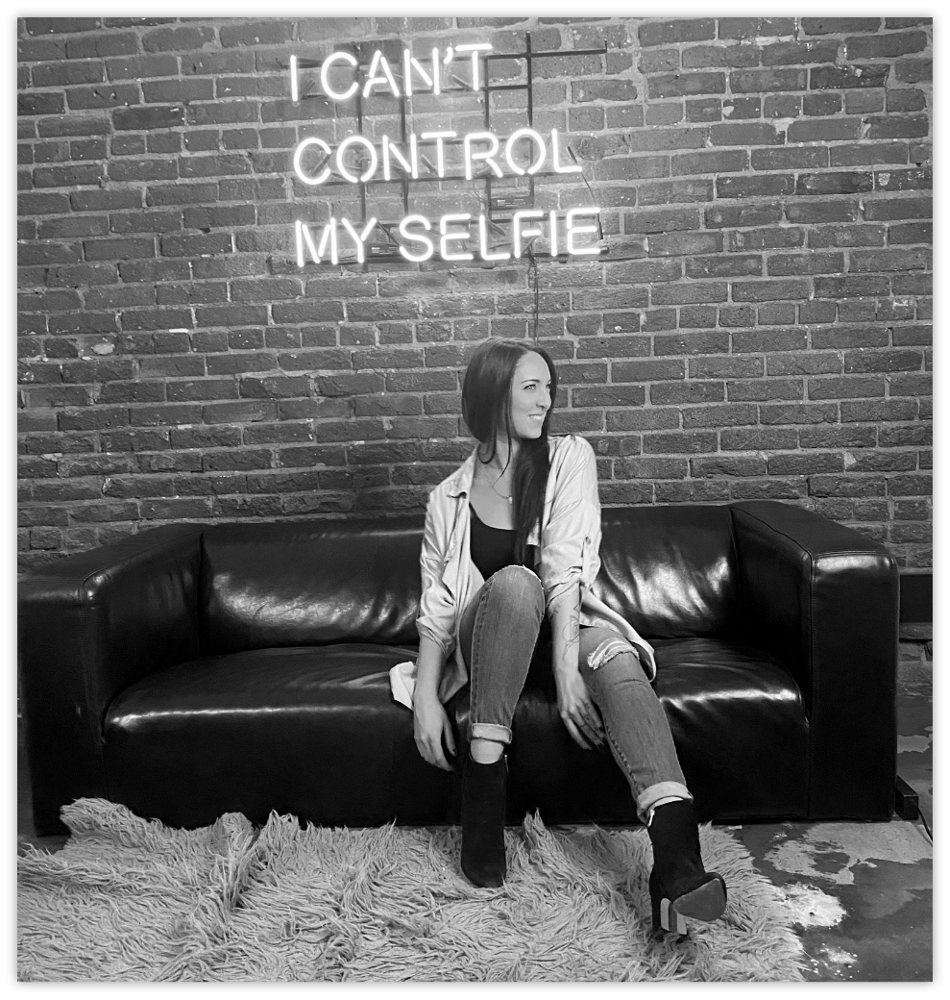
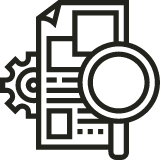

<!DOCTYPE html>
<html>
    <head>
        <meta charset="UTF-8">
        <title>RISE 'N GRIND DESIGNS</title>
        <link href="css/style.css" rel="stylesheet" type="text/css">
        <link rel="stylesheet" href="https://use.typekit.net/llz2aog.css">
      </head>
</html>
<body>
    <div class="navbar">
        <div class="logo"></div>
        <a class="hamburgerMenu">
            <span></span>
            <span></span>
            <span></span>
        </a>
        <div class="menu">
          <a href="#">Home</a>
          <a href="#">About</a>
          <a href="#">My Work</a>
          <a href="#">Blog</a>
          <a href="#">Contact</a>
        </div>
    </div>
        <div class="header">
            
            <div class="headerText">
            <p style="font-size: 30px; font-weight: 200;">HELLO</p>
            <p style="font-size: 70px;">I'M SAMANTHA</p>
            <p style="font-size: 40px;">DIRECTOR OF MARKETING AND</p>
            <p style="font-size: 40px;">UX/UI DESIGNER</p>
            </div>
        </div>
        <div class="about">
            <h1>GET TO KNOW ME</h1>
            <p><strong>My passion is to take a client’s thoughts and turn them into a customized visual experience.</strong>
                <br>
                I really enjoy working on projects that require both strategy and design. Having the ability to create 
                something that’s visually appealing is a great feeling, but to have it look better than ever and function 
                seamlessly is a whole new level. 
                <br>
                The key to successful creative problem solving is having the ability to break down the understanding of 
                behaviors and psychology behind the need for a new product. I use this process to help clients identify 
                pain points, understand the needs of the team and the potential users, and ultimately find the final 
                solution that fixes the issues and sets the business up for success. </p>
        </div>
        <div class="skills">
            <div class="research">
                
                <p><strong>User Research</strong></p>
                <p>Conducting Interviews</p>
                <p>Distributing Surveys</p>
                <p>UI Analysis</p>
            </div>
            <div class="strategy">

            </div>
            <div class="content">

            </div>
            <div class="design">

            </div>
        </div>
</body>
</html>